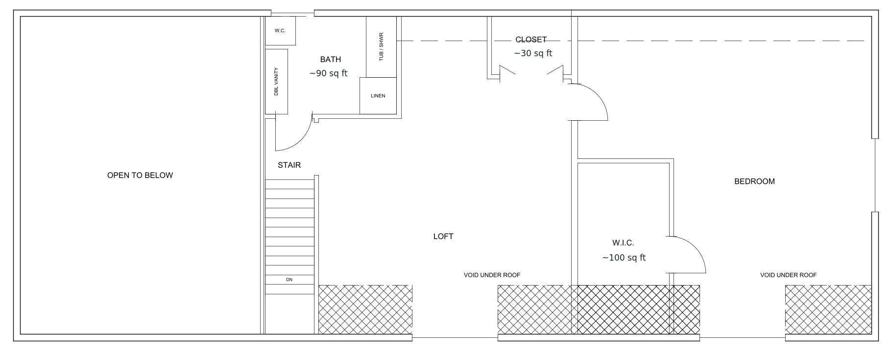

Floor plans
Explore how the rooms connect, from the main-floor suite to the upstairs loft. Selected spaces show approximate square footage.

A feel for the layout
The great room anchors the main floor, with the loft open above. Follow the plans below to see the rooms, porches and outdoor spaces.
Main floor
Main-floor suite, great room, kitchen and dining, half bath, laundry, screened porch, deck and garage.

Second floor
Bedroom over the garage with walk-in closet, loft open to the great room and upstairs bath.

Lower-level planning set
The full CAD set that conveys with the house includes existing conditions, a proposed basement finish with two bedrooms, jack-and-jill bath, den and flex room, schedules and fourteen trade sheets. It remains planning and pricing information only.
Walk the plan in person
Request property information or arrange a showing.
realtor@stevenhay.com